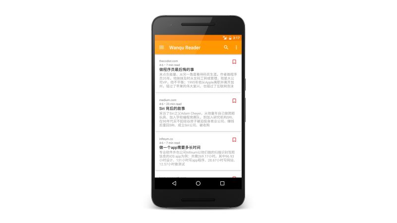

A developer in Web & Mobile,
focus on android development and back-end.
Wanqu Reader

Wanqu Reader is a news application, available on Android devices, which also support the reading offline.
It's material-designed and based on modern technologies including MVP, Okhttp3, Dagger2 and powerful Retrofit2.